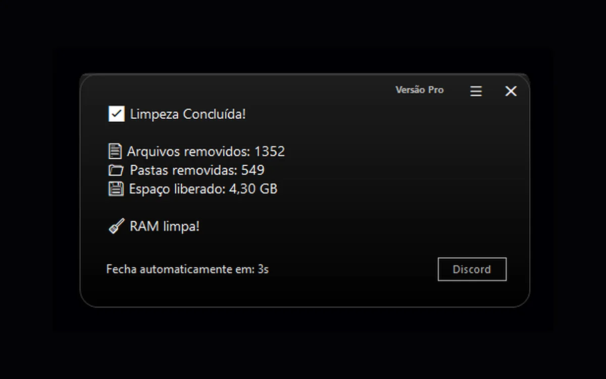
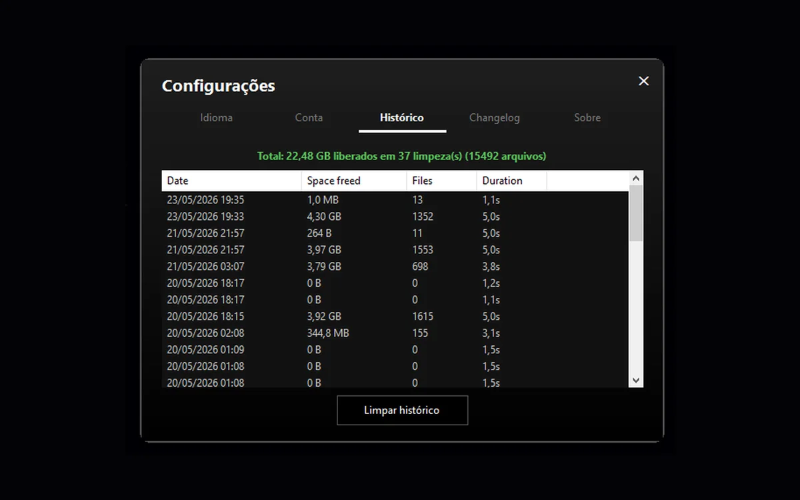

Limpeza Concluída
Visualize arquivos removidos, pastas excluídas, espaço liberado e o status da rotina de RAM.
Um aplicativo para Windows focado em limpeza, transparência, segurança e evolução contínua, com planos mensais, anuais e permanentes.
Design limpo, resultados claros. Confira como o Limpador Pro apresenta cada etapa da limpeza.

Visualize arquivos removidos, pastas excluídas, espaço liberado e o status da rotina de RAM.

Acompanhe as limpezas realizadas com data, espaço liberado, quantidade de arquivos e duração da operação.
Limpe temporários, caches e a Lixeira com verificações de segurança que ajudam a preservar dados pessoais e arquivos em uso.
Limpa áreas temporárias suportadas do Windows sem forçar a remoção de itens que estejam em uso.
Remove caches recriáveis de navegadores e aplicativos reconhecidos preservando dados importantes.
Executa a rotina de memória ao final da limpeza e mostra o resultado junto ao resumo da sessão.
Executa a etapa de DNS separadamente e informa corretamente quando a operação não é concluída.
Remove os itens da Lixeira e contabiliza apenas aquilo que foi realmente excluído.
Considera aplicativos abertos para evitar a limpeza de caches reconhecidos enquanto estão sendo utilizados.
Suporte a Chrome, Edge, Brave, Opera, Discord, Teams, WhatsApp, Slack, Spotify e VS Code.
Consulte sessões anteriores com informações de espaço liberado, arquivos processados e duração.
O Limpador Pro foi pensado para limpar o que pode ser recriado e preservar o que realmente importa.
Quando uma exclusão não pode ser confirmada com segurança, a prioridade é preservar o item em vez de forçar a remoção.
O Limpador Pro combina praticidade com uma abordagem conservadora: automatiza o que faz sentido e evita transformar dados importantes em alvo da limpeza.
Recursos que reduzem etapas e deixam o resultado mais fácil de entender.
A rotina padrão prioriza dados recriáveis e evita avançar sobre informações pessoais ou situações duvidosas.
A v1.0.2 reúne a maior evolução da linha 1.0 até agora: estreia da Limpeza Extra — Essencial, mais segurança, histórico ampliado, relatórios detalhados e melhorias importantes de interface. A Limpeza Extra completa fica reservada para a v1.1.0.
A primeira versão da nova área chega na v1.0.2 com uma proposta mais simples, estável e cuidadosamente limitada.
Nova na v1.0.2Mais espaço para consultar limpezas antigas, com detalhes e melhor recuperação em caso de interrupção.
Histórico ampliadoBusca, cartões de resultado e separação clara entre arquivos removidos, itens preservados, etapas e falhas.
Mais transparênciaMais proteção para arquivos em uso, caminhos protegidos e situações em que uma exclusão não pode ser confirmada.
Proteção reforçadaA primeira versão reuniu as principais rotinas de limpeza em uma experiência única: abrir, executar e receber um resultado claro.
A segunda versão priorizou precisão, estabilidade e proteção de dados, mantendo somente o que realmente foi entregue ao público nessa atualização.
A v1.0.2 estreia a Limpeza Extra — Essencial e reúne melhorias importantes em interface, segurança, compatibilidade, histórico, relatório, idiomas e desempenho.
Quando publicada, a v1.0.2 entregará a versão Essencial. A v1.1.0 permanece no roadmap para a expansão completa da Limpeza Extra.
A próxima release chegará com escopo controlado, mantendo a abordagem segura do Limpador Pro.
A evolução maior da funcionalidade, reservada para uma versão posterior.
Verifique se a Lixeira não contém arquivos importantes antes de iniciar a limpeza.
Evite executar a limpeza enquanto instalações ou atualizações do Windows estiverem em andamento.
Após limpar caches, a primeira abertura de alguns programas pode levar um pouco mais de tempo enquanto os dados são recriados.
Feche navegadores e aplicativos compatíveis quando quiser permitir uma limpeza mais completa dos caches suportados.
Sem instalação, sem configuração, sem surpresas.
O pedido de administrador aparece automaticamente. Basta confirmar.
A operação ocorre em silêncio, em segundo plano, sem interromper seu trabalho.
Uma notificação elegante apresenta o resultado detalhado da limpeza.
Mensal para começar, anual para economizar ou permanente para pagar uma vez. As primeiras 50 licenças permanentes individuais recebem a condição Founder.
Menor compromisso para começar
Depois R$ 12,90/mês
Ideal para experimentar o Pro e manter o acesso enquanto a assinatura estiver ativa.
Mais economia na assinatura
Economize R$ 34,90 vs. 12 mensalidades · cerca de R$ 9,99/mês
Para quem quer usar o Limpador Pro durante o ano pagando menos do que no plano mensal.
A Founder Edition é reservada aos primeiros apoiadores do Limpador Pro. Além da licença permanente e de todas as futuras atualizações, o Founder recebe identidade exclusiva, prioridade no suporte e condições especiais em serviços de otimização.
Quem possui a Founder Edition recebe condições especiais nos serviços de otimização, além do badge, cargo exclusivo no Discord e prioridade no atendimento.
Quando as 50 licenças Founder acabarem, essa condição não volta. O Permanente Individual passa diretamente para o preço normal de R$ 179,90.
Licença permanente com preço especial, identidade Founder, prioridade e condições exclusivas nas otimizações.
Garantir Founder por R$ 149,9050 vagas totais · disponibilidade atualizada conforme as vendas
Depois das 50 vagas Founder, a licença Individual passa diretamente para R$ 179,90. Família e Equipe mantêm descontos por quantidade para quem precisa de mais PCs.
Os pacotes Família e Equipe são exclusivos da licença permanente. As licenças são individuais por computador e não representam uma única licença compartilhada entre vários PCs.
A condição Founder é limitada às primeiras 50 licenças permanentes individuais por R$ 149,90. Depois disso, o Permanente Individual passa diretamente para R$ 179,90. A licença utiliza identificação de hardware; formatação ou alteração relevante no computador pode exigir nova validação pelo suporte.
As respostas mais importantes de cada solução ficam na própria página.